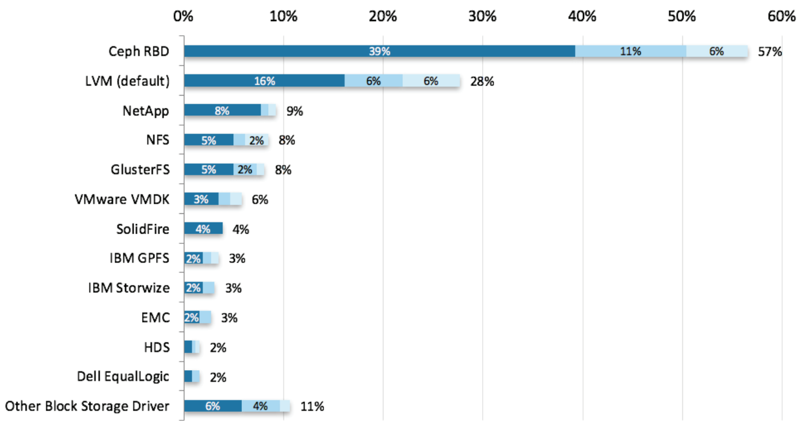

Ceph OSDs:
a pragmatic guide
Piotr Wachowicz
www.brightcomputing.com
def: pragmatic (adj.) - /praɡˈmatɪk/ - "dealing with things sensibly and realistically in a way that is based on practical rather than theoretical considerations."
OpenStack Summit Barcelonaslides @ https://speakerdeck.com/brightdevteam/
Storage for OpenStack
Glance && (Cinder || Nova) + Object
Small scale storage / POC
node local storage / NFS
Large scale / Production
distributed/redundant storage
DYI of choice for OpenStack: Ceph
Free, simple, widely adopted (fig. from April 2016)

Free? Simple? Flexible?
Let's analyze a case study following a Ceph Admin.
Throughout the study, color orange references to Ceph.

Not so simple...
But, why?
Ceph is complex, and waaaay too flexible
==
it's easy to misconfigure it
Main problem: 1 OSD node, how many OSD Daemons?

thin nodes (<10 disks) vs fat nodes (>20 disks), how many?
Today, let's discuss:
Agenda
Background
Background

Challenge
infinite amount of different cluster configurations
shiploads of scenarios
we need virtual clusters (Dev, QA, support)
we need them to be created fast, devs won't wait
Solution?
Our own Private cloud
Bright OpenStack + Ceph (+ Heat)
(Cluster on demand - clusters in under 2 minutes)

Krusty the cloud
17 Hypervisor Nodes, 400 VMs
7 Ceph OSDs (extending to 10)


In a nutshell
We create hundreds of VMs daily.
copy-on-write
Entire engineering teams relies on Ceph working fine to make that happen, fast.
create great software - not manage Ceph
101
Show of hands
What is Ceph?
based on Reliable, Autonomous, Distributed Object Store(RADOS)
Ceph high-level Architecture

Ceph (RADOS) key features?
Ceph nodes
OSD nodes typically deployed with "SSD Journals" to speed up writes (HDDs are slow)
1 OSD node, multiple OSD Daemons
Fat vs thin
More of less dense (fewer disks), nodes, or fewer nodes with more disks?
Fat nodes
Many cores/sockets 20+ HDDs, 1+ Journal SSDs
- Typically cheapest per PB in terms of initial purchase and power consumption
- More difficult to configure and maintain
- Fewer nodes means longer recovery
- more HDDs per node -> more cores -> more sockets -> NUMA
- Dense nodes -> more going on -> larger potential for bottlenecks
Good, choice if you can afford many (6-10+) of them
Thin nodes
- faster recovery (if node goes down)
- typically 1 socket is enough (no NUMA)
- more space in racks, more power needed
Good to start out
Fat vs thin - sweet spot?
Networking

Networking for OpenStack + Ceph
Solution 1 - Single Fabric
Problems:Solution 2 - Multiple Fabrics
But what about NICs? 10 GigE cards are expensive
Solution 2 - Multiple IP Fabric - NICs
Networking - other considerations
What about the disks?
Example:
CPU
How many sockets?
2+ sockets - NUMA
1 socket is a safe choice, but how many cores?
How many cores?
Depends on your SSD (and networking)
HT cores vs physical cores?
How much memory?
0.5 GB - 1 GB per TB per daemon
more is better (also, linux vFS caching)
OSD node with 4 x 2 TB disks(4 daemons) -> 8 GB of RAM
OSD node with 16 x 2 TB disks(16 daemons) -> 32 GB of RAM
One way to look at it (oversimplifying):
Fat vs thin
Assuming 0.4 GB/s seq write for SSDs, and 10 GigE fabric (i.e. 3 SSDs per node max) with a ceph-cluster network for replication, 1 journal SSD being able to support 6 HDDs
| Unreasonably thin | Thin | Pragmatic | Regular | Fat | ||
| HDDs Total | 96 | 96 | 96 | 96 | 96 | |
| Nodes total | 96 | 16 | 8 | 6 | 2 | |
| HDDs/Node (cpu cores) | 1 | 6 | 12 (or 10) | 16 | 48 | |
| Journal SSDs/Node | 1 | 1 | 2 | 3 | 8 | |
| SSD Bandw/Node | 3.2 Gbps | 3.2 Gbps | 6.4 Gbps | 9.6 Gbps (1.2 GB/s) | 25 Gbps | |
| cluster seq write (all SSDs) | 38.4 GB/s (!) | 6.4 GB/s | 6.4 GB/s | 6.4 GB/s | 6.4 GB/s | |
| Rack space / node | 1U | 1U x 2.5", 2U 3.5" | 2U 3.5" | 2U 2.5", 3U 3.5" | 4U | |
| Summary | underutilized SSD (1 HDD) and NIC great recoveryPeak IOps, bandwidth |
underutilized NIC |
a bit underutilized NIC Goot utlization of SSDs |
ok, but only 6 nodes |
Exceeding net (underutilizing SSDs) low resilency (long (LACK OF!) recovery) |
Takeaways
- 2U, 10 x 3.5" HDDs + 2 SATA SSDs, or 12 x 3.5" HDDS + PCIe SSD
- Prefer slimmer nodes, if you can afford the space
- Prefer fatter nodes, if you can handle complexity, and can afford many of them up-front (2-node clusters are bad for you)
- Multisocket OSD nodes can be a pain to configure (NUMA)
- 1 GigE networking? Don't ...
- 10 GigE - go with 1-3 SATA Journal SSDs
- 40 GigE - go with 1+ PCIe Journal SSDs
Takeaways (2)
- Avoid cluster smaller than ~6 OSD nodes (long recovery)
- More data per node means longer recovery
- 6 slim node cluster recovers faster than 6 fat node cluster (more data to transfer)
Tips if you're just starting out
- Deep scrubbing can be a pain
- Object vs Data stripping
- use QoS for VMs/volumes using Ceph for RBD
- use RBD cache to aggregate small IO
- Watch the OpenStack summit videos on Ceph
- "Ceph at CERN: A Year in the Life of a Petabyte-Scale Block Storage Service"
Thank you, questions?
slides @ https://speakerdeck.com/brightdevteam/